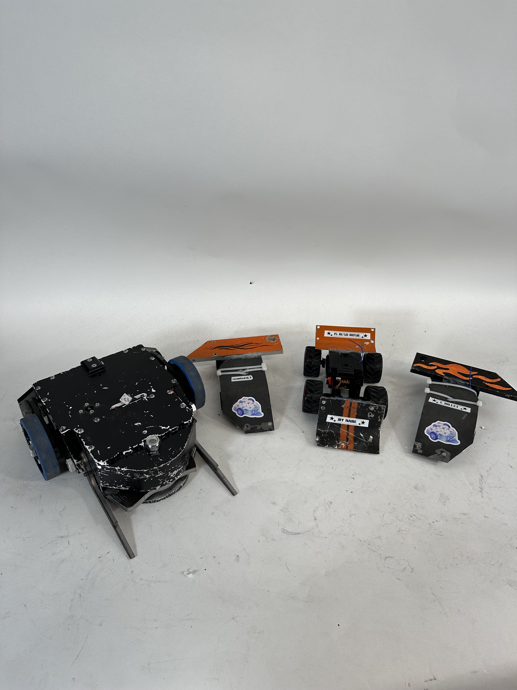
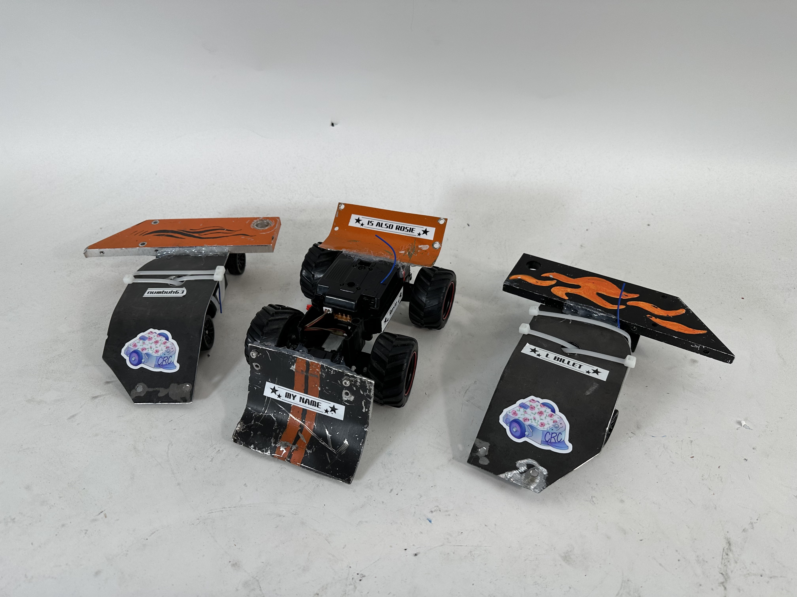
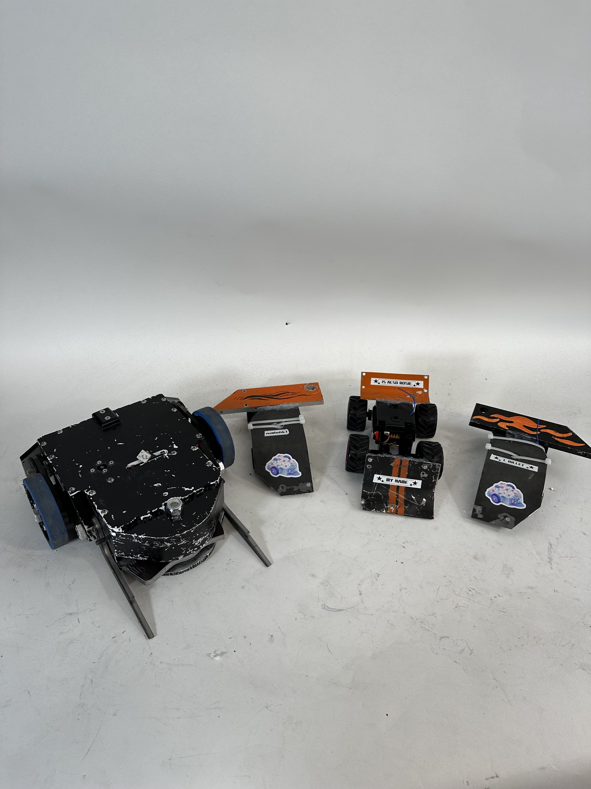
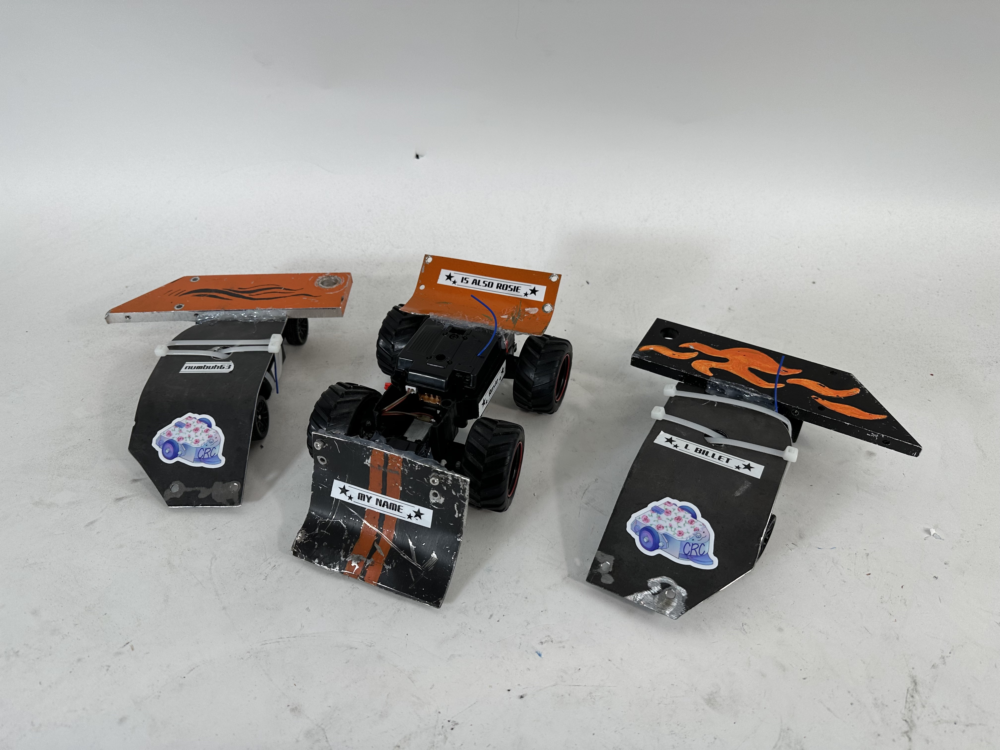

Gorge Rusel "The Numbuh 63"
| Stats | |
|---|---|
| Vintage: | 2023 |
| Height: | 3 inches |
| Weight: | 1 lb 5 oz |
| Fights: | Waking up in the morning is a fight Gorge Rusel struggles with everyday |
| Wins: | Nothing feels like a win without L Billet |
| Top Speed: | |
| Weapon Speed: | Sad like his feelings |
| Most Damaged Part: | His heart |
| Favorite Movie: | Step Brothers |
Gorge Rusel "The Numbuh 63"
Builders
James Courtenay, James LaSalle, Isaac Newcomb, Mohammed Chowdhury, Spencer Hurst, Stella Taglich, Zander Knight.
Description
Right alongside his twin brother and the martyr L Billet, Gorge Rusel is one of the star minibots of CRC. Gorge Rusel was thrown into the ring immediately after his brother was instantly killed before his eyes, and he had no time to grieve other than some intense anime monologues in his head. He has survivor's guilt and severe PTSD from his May competition, but he still managed to barely make it out with his own life to tell the tale of the L Billet as well as his own close calls with the kiss of death. Gorge Rusel's morning coffee is diluted by his own tears, and he forgot what it's like to wake up in the morning without breaking down. Sometimes he wonders if life is even worth living anymore. Gorge Rusel is a big fan of Formula 1 though.
Design
Gorge Rusel's design is just like his late twin brother, L Billet. Gorge Rusel spent most of his matches running, but the one time he DID go on the offensive and bravely rammed into an enemy robot. When he did so, all of his armor suddenly popped off and he almost died from a heart attack. Nevertheless, the pain of running into an enemy bot is nothing compared to the pain of waking up without his brother everyday.
Trivia
- Someone had an aneurysm moments before naming Gorge Rusel.
- You can find Gorge Rusel watching Formula 1 on Sunday afternoons right after his midday cry.
- He listens to sad music at every waking moment.
 


